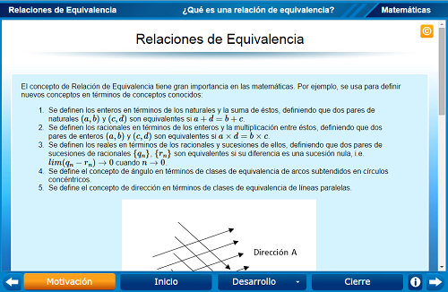
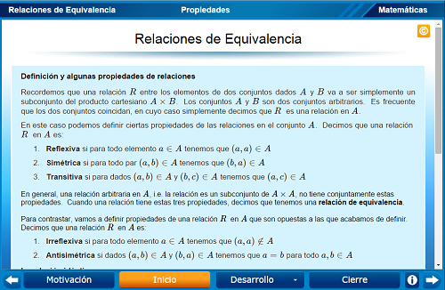
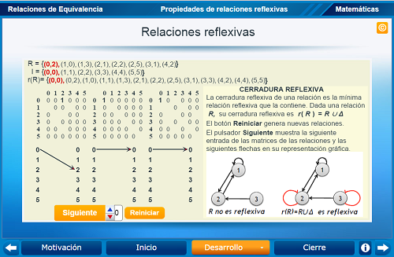
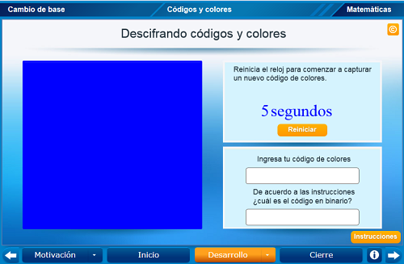
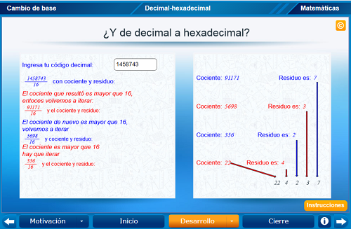
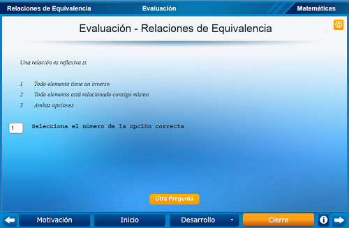

Relaciones de Equivalencia
Relaciones de Equivalencia
 Relaciones de Equivalencia
Relaciones de Equivalencia
Analizar con un modelo interactivo el estudio de las propiedades de Relaciones de Equivalencia e ilustrarlas con ejemplos.
Se presenta una pequeña reseña de la importancia de las Relaciones de Equivalencia en las matemáticas.

Se ilustran y definen los conceptos de reflexividad, simetría, transitividad. irreflexividad, antisimetría, y Relación de Equivalencia y se muestra como computarlas en términos de la identidad la relacione inversa y la composición de relaciones

Se ilustra en formas interactiva, con su representación gráfica, la cerradura reflexiva de una relación.

Se ilustra en formas interactiva, con su representación gráfica, la cerradura simétrica de una relación.

Se ilustra en formas interactiva, con su representación gráfica, la cerradura transitiva de una relación.

Se hacen preguntas en donde se examina la comprensión obtenida sobre las propiedades que las Relaciones de Equivalencia tienen y como identificarlas, tales como las siguientes: ¿Cómo determinas si una relación es reflexiva? ¿Qué es una relación de equivalencia? ¿Cuándo es una relación transitiva?

| Diseño del contenido | Julio Arnoldo Prado Saavedra Víctor Manuel Amezcua Y Raz |
| Diseño funcional | Julio Arnoldo Prado Saavedra Víctor Manuel Amezcua Y Raz |
| Programación | Julio Arnoldo Prado Saavedra |
| Asesoría de programación | Víctor Manuel Amezcua Y Raz |
| Diseño gráfico | Ricardo López Gómez |
| Coordinación | Leticia Montserrat Vargas Rocha |
| Diseño funcional | Julio Arnoldo Prado Saavedra Oscar Escamilla González |
| Programación | Julio Arnoldo Prado Saavedra |
| Asesoría de programación | Oscar Escamilla González Leticia Montserrat Vargas Rocha |
| Diseño gráfico | Francisco Varela Fuentes |
| Coordinación | Leticia Montserrat Vargas Rocha |
| Desarrollo del contenedor | Oscar Escamilla González |
Los contenidos de esta unidad didáctica interactiva están bajo una licencia Creative Commons Reconocimiento-NoComercial-CompartirIgual.
La unidad didáctica fue creada con Arquímedes, una herramienta de código abierto.
La unidad didáctica contiene escenas elaboradas con Descartes, una herramienta de código abierto.
LITE - UnADM 2014